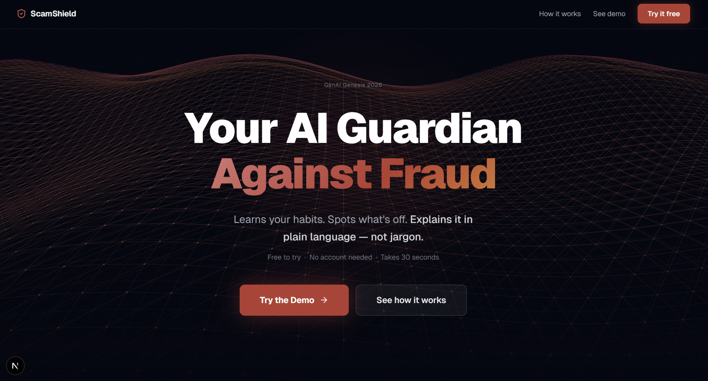
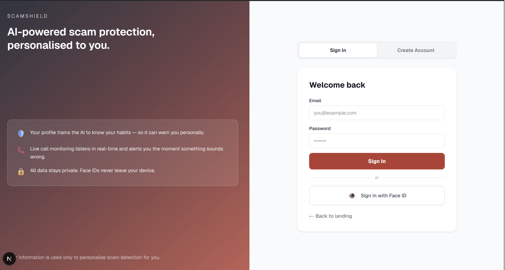
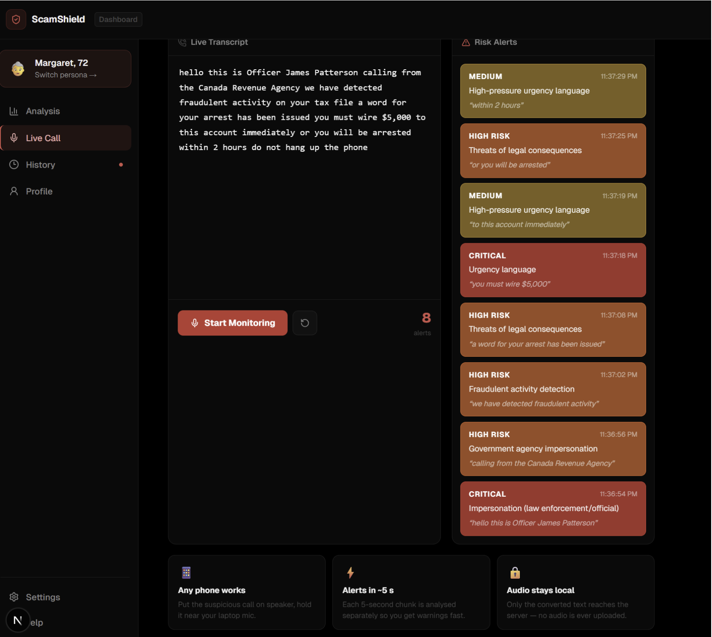
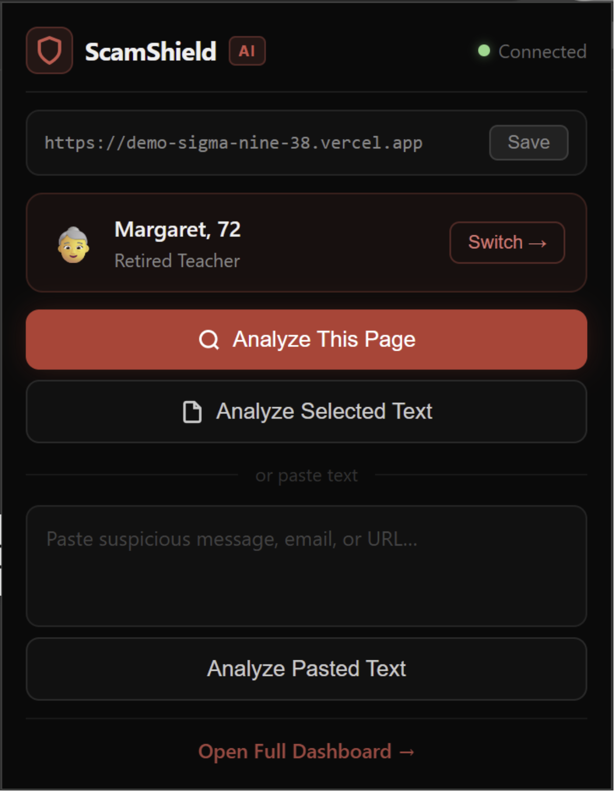

ScamShield: AI Personal Fraud Guardian
An AI that learns how you use the internet and explains risk in plain language — so seniors, immigrants, and first-time users can spot scams before they click.
Try it
Live app and walkthrough — both open in a new tab.
Open live demo → Watch demo on YouTube →
What it does
- Analyze messages, URLs, and images — Get a risk level, score, reasons, plain-language explanation, and recommended action in seconds.
- Personalized for you — Uses your context (e.g. “never used crypto,” known domains) so the same message can get a different, relevant explanation.
- Voice & live call — Browser transcribes; we analyze the text. We never intercept the call.
- Face ID — Runs in your browser only; no biometrics leave your device.
- 8 languages — “Is this safe?” in the user’s language (e.g. Chinese, Punjabi, Arabic, Tagalog).
- Learns from you — When you mark scam or legit, we feed it back so the model doesn’t repeat the same mistakes.
Screenshots
Analyzer UI
Paste a message or URL and get risk level, reasons, explanation, and recommended action.

Login

Dashboard

Live call demo
Browser transcribes; we analyze the text. We never intercept the call.

Chrome extension
“Analyze this page” / “Analyze selected text” from any tab.

Quick start
1. Clone and install
git clone https://github.com/malakkhalifaa/genai-genesis-2026.git
cd genai-genesis-2026
npm install
cp .env.example .env.local2. Set up API keys (pick one or more)
Open .env.local and add:
- Watsonx (IBM):
WATSONX_AI_APIKEY,WATSONX_PROJECT_ID— seedocs/WATSON-IBM.md. - Gemini:
GEMINI_API_KEY— Google AI Studio. - OpenAI:
OPENAI_API_KEY— OpenAI API keys.
The analyzer uses Watsonx first, then Gemini, then OpenAI (whichever is configured).
3. Run
npm run devOpen http://localhost:3000. Paste a message or URL → Analyze → see risk level, reasons, explanation, and recommended action.
4. Optional: Supabase (profiles & history)
For user profiles and report history, set your Supabase URL and anon key in .env.local. See supabase-schema.sql for the schema.
Tech stack
| Layer | What we use |
|---|---|
| App | Next.js (App Router), React, Tailwind |
| API | Next.js API routes (/api/analyze, /api/profile, /api/report, etc.) |
| AI | IBM Watsonx (Granite), Google Gemini, or OpenAI — same prompt, env-driven |
| Rules | Behavioral hints (lib/behavioral.ts), URL/phishing checks (lib/phishing.ts) |
| Data | Supabase (Postgres) — profiles, reports, history |
| Extension | Chrome Manifest V3 — “Analyze this page” / “Analyze selected text” |
| Deploy | Vercel (app + API) |
How the analyzer works (technical)
End-to-end flow from request to response:
1. Request handling (POST /api/analyze)
- Input:
contentType(text|url|image|document), plustext,url,imageBase64, ordocumentBase64as appropriate. OptionaluserContext(oruserIdto load profile from Supabase). - Validation: Required fields checked per
contentType; 400 if missing. - Profile resolution: If
userIdis sent, the route fetches the user row from Supabase and maps it touserContext(neverUsedCrypto,knownDomains,typicalContacts, etc.) so the LLM gets real profile data.
2. URL mode: content fetching
For contentType === "url", we fetch the page (server-side): follow redirects, extract visible text and <title>, and pass fetchedPageText, fetchedPageTitle, finalUrl, and urlRedirected into the analyzer. The LLM sees both the URL and the page body so it can detect phishing copy, fake login forms, and urgency language.
3. Hint generation (no LLM yet)
- Behavioral (
lib/behavioral.ts): Compares the request touserContext. Examples: ifneverUsedCryptoand the content mentions crypto/Bitcoin → add “Unusual for you: you have never used cryptocurrency.” IfknownDomainsis set and the URL isn’t in the list, that can be surfaced. Output is a list of short hint strings. - Phishing (
lib/phishing.ts): Runs only when a URL is present. Checks TLD against a suspicious set (e.g..tk,.xyz), looks for phishy substrings (e.g. fake login, brand impersonation), and homograph-style character ranges. Returns lines like “[URL check] Suspicious TLD: .tk (medium)”. - All hints are concatenated and passed into the prompt as extra context; the LLM uses them to justify risk and reasons.
4. Prompt construction (lib/ai.ts)
- System/instruction block: A fixed
STRUCTURED_PROMPTdefines the task (fraud detection for vulnerable users), the exact JSON shape required (riskLevel,riskScore,reasons,explanation,recommendedAction), and scam patterns (urgency, impersonation, verification codes, crypto/gift cards, phishing, etc.). It also states that content can be in any language and that we may request the explanation in a specific locale. - Content block: Built by
buildContentPrompt(): the raw content (message, URL + optional fetched page text/title), thenuserContext(name, neverUsedCrypto, knownDomains, typicalContacts, locale), then the behavioral and phishing hint lines. For non-English content we optionally add a short instruction so the model can return a bilingual or localized explanation. - Full prompt:
STRUCTURED_PROMPT + "\n\n" + contentPrompt(and for image/document, the same instructions plus the binary payload). One contiguous text (plus optional image/document) is sent to the model; we do not fine-tune or retrain — we only instruct and supply context per request.
5. LLM invocation and provider order
- Provider order: If Watsonx is configured (
WATSONX_AI_APIKEY,WATSONX_PROJECT_ID) and the request is text/URL (not image/document), we call Watsonx (e.g.ibm/granite-3-8b-instruct). Else we use Gemini (with model fallback list, e.g.gemini-2.5-flash-lite,gemini-2.0-flash). Else OpenAI (gpt-4o-mini). Image and document flows use Gemini (or OpenAI where supported) for vision/document. - Parameters: Low temperature (~0.2) for stable, structured output. Watsonx uses
max_new_tokens; Gemini/OpenAI use their default caps. - Same prompt: The exact same prompt text is sent to whichever provider is selected; only the client and model ID change.
6. Response parsing
- The model returns a string. We expect a single JSON object; often the model wraps it in markdown code fences or adds prose.
- parseStructuredResponse(): Strip optional markdown code fences around JSON, locate the first
{and last}, slice that substring, andJSON.parseit. We then validate and coerce:riskLevelmust be one oflow|medium|high|critical;riskScoreclamped to 0–100;reasonsmust be an array of strings;explanationandrecommendedActionmust be strings. If parsing or validation fails, we return a safe default (e.g.riskLevel: "medium",riskScore: 50, and a short message) so the API never throws a 500 due to malformed model output. - Optional: we attach
detectedLanguage(e.g. for non-English content) when our language detection says the input wasn’t English.
7. Response to client
The route returns the structured object: { riskLevel, riskScore, reasons, explanation, recommendedAction } (and optionally detectedLanguage). CORS headers are set so the web app and Chrome extension can call the API from the browser.
Summary: No retraining. We instruct the model with a fixed scam-detection prompt and guide each request with user context and rule-based hints (behavioral + URL/phishing). The model returns JSON; we parse it defensively and expose a stable API contract.
API (for extension / integrations)
POST /api/analyze
- Body:
{ contentType: "text" | "url" | "image" | "document", text?, url?, imageBase64?, documentBase64?, documentMimeType?, userContext?, userId? }userContextcan include:name,neverUsedCrypto,neverSentGiftCards,typicalContacts[],knownDomains[],locale.- If
userIdis set and Supabase is configured, the server loads the user profile and overridesuserContext.
- Response:
{ riskLevel: "low"|"medium"|"high"|"critical", riskScore: number, reasons: string[], explanation: string, recommendedAction: string, detectedLanguage?: string }
Example:
curl -X POST http://localhost:3000/api/analyze \
-H "Content-Type: application/json" \
-d '{"contentType":"text","text":"Send $500 in Bitcoin to unlock your account."}'Repo structure (high level)
genai-genesis-2026/
├── README.md
├── app/ # Next.js app (root app dir)
│ ├── page.tsx
│ ├── layout.tsx
│ └── api/ # API routes
│ ├── analyze/ # Scam analysis (LLM + hints)
│ ├── profile/ # User profile
│ └── report/ # Store reports
├── src/ # Additional app pages (dashboard, demo, etc.)
│ └── app/
├── lib/ # Shared logic
│ ├── ai.ts # LLM (Watsonx / Gemini / OpenAI)
│ ├── behavioral.ts # User-context hints
│ ├── phishing.ts # URL checks
│ └── db.ts # Supabase client
├── extension/ # Chrome extension
│ ├── manifest.json
│ ├── popup.html, popup.js
│ └── ...
├── docs/
│ └── WATSON-IBM.md # Watsonx setup
└── supabase-schema.sql # DB schemaVision & impact
Problem: Vulnerable communities (seniors, immigrants, first-time users) are targeted the most. They need a simple “Is this safe?” check in plain language — before the click.
What we built: One place to check messages, links, and (optionally) call audio. Personalized explanations (“this is risky for you because…”) and learning from user corrections so the system gets better over time.
Hackathon fit: TD Fraud Detection (behavioral + explainability) · IBM Best Use of Cloud Services (Watsonx/Granite on IBM Cloud).
License
MIT (or your chosen license).